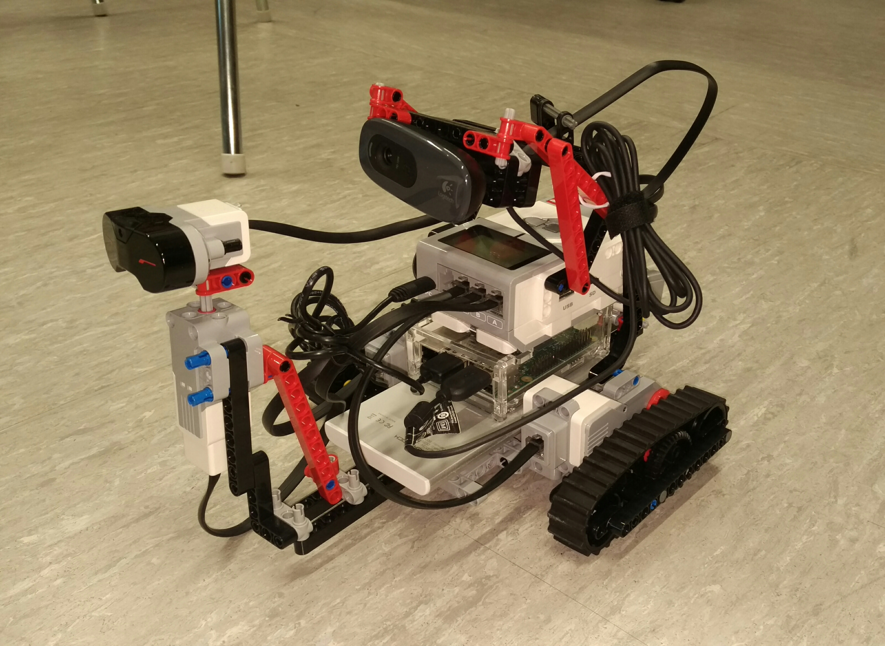

Täh?
Ideana on rakentaa jotain konkreettista, näyttää mitä me osataan ja samalla oppia uutta.
Tavoite
Etäohjattava Lego Mindstorms-robotti antureilla ja kameralla.
Minimum viable product
Robotti liikkuu APIa käskyttämällä
Robottiin kytketty kamera lähettää kuvaa ohjaajalle
Anturidata luetaan ja lähetetään ohjaajalle
Visio
Ohjaus tabletilla, käyttöliittymässä nuolet eteen/taakse molemmilla käsillä kummallekin telalle
Keskellä livekuva tabletista
Kaikki saatavilla oleva sensoridata näytetään ohjaajalle
Robotti osaa tunnistaa kuvasta esineen ja ajaa sitä kohti
Tampere teki tällaisen. Tehdään me parempi.

Työvälineet
NodeJS -
Python -
Lego Mindstorms -
Raspberry Pi
Team 1
ev3devin asennus Mindstormsiin
Raspberry Pi linkitettynä Legoihin
HTTP-API Raspissa, kytkennät mahdollisimman moneen Mindstormsin ominaisuuteen (liike, sensorit)
Team 2
Raspicam kiinni Raspberryyn, livekuva näkyviin samalla koneella pyörivään webbiserveriin
Hahmontunnistus kameralla OpenCV:llä ja API kertomaan missä suunnassa ko. esine on.
Team 3
AstroPI kytkettynä Raspiin, kaiken sensoridatan lähetys edelleen MQTT:llä
Lopussa kaikkien tiimien lopputulokset kasataan pyörimään robotin päällä olevaan Raspberryyn.
Omien ideoiden toteuttaminen sallittua ja suotavaa!
SOME
Touhun kuvaaminen ja jakaminen somessa on sallittua ja kannustettavaa.
Aikataulu ja osanotto
Aloitellaan lounasaikaan sovittuna päivänä, ohjelmaa jatkuu niin pitkään kun jaksetaan.
Firman puolesta ruokaa ja juomaa.
Ilmoittautumiset Doodlen kautta. Eniten kannatusta löytänyt päivä valitaan.
Osanotto ei ole pakollista, ei ole pakko myöskään olla koko aikaa. Sopikaa asiakkaan kanssa myös haittaako puolen päivän poissaolo.
Jos tiedät osallistuvasi, asenna koneelle sopiva kehitysympäristö jo etukäteen mahdollisuuksien mukaan